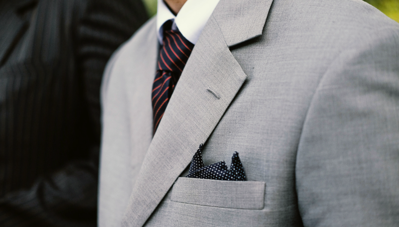
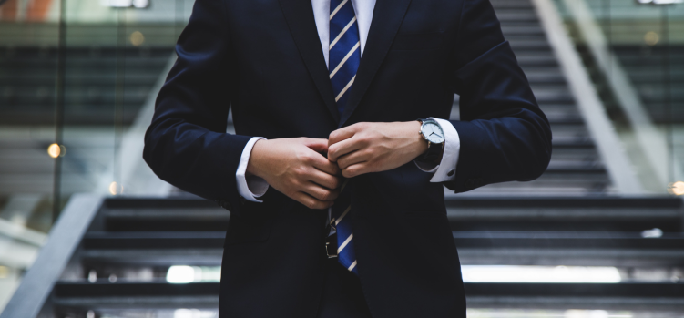
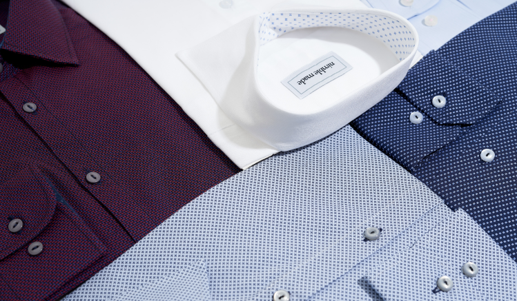
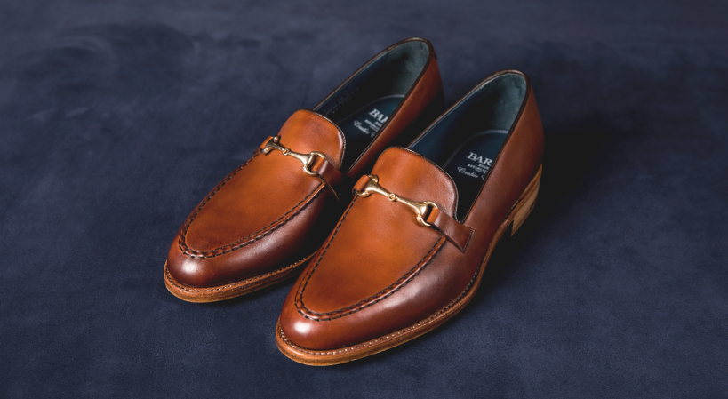

Имидж мужчин
Мы судим о книгах по обложкам, а о людях — по одежкам.
4 НАПРАВЛЕНИЯ ДЕЛОВОГО СТИЛЯ ОДЕЖДЫ
Не надо воспринимать официальный деловой стиль как нечто монотонное, протокольное и каноничное. Он достаточно многообразен и подразумевает диапазон от строгого до спортивно-молодежного. Поговорим подробнее о наиболее популярных направлениях.

1. Повседневный
Наиболее универсальный и часто встречающийся. Предполагает, как правило, костюм в благородных серых тонах, дополненный деталями, созвучными и гармонирующими по цвету. В зависимости от выбранных для сочетания оттенков, подходит для торжеств, официальных встреч и в качестве повседневного делового образа.
2. Офисный
Традиционно подразумевается строгий костюм-двойка (тройка) плюс рубашка спокойного неброского цвета. Для любителей звучных акцентов допустим контрастный галстук или яркий карманный платок.
В некоторых организациях офисный деловой стиль носит смягченный, слегка формальный характер. Сотрудникам разрешено носить темные классические джинсы с водолазками, пуловерами и джемперами сдержанных оттенков.
3. Официальный
Общий тон задают фрак или смокинг и присутствие неотъемлемых аксессуаров: карманные часы с цепочкой и белые перчатки. Направление не отличается разнообразием. Существует два основных варианта, суть которых отражена в общепринятых названиях:
- Blacktie (смокинг с черным галстуком)
- Whitetie (фрак с белым галстуком)
4. Классический
То, что ассоциативно представляет каждый при упоминании о деловом стиле, и есть классика. Костюм как светлый, так и темный. Пиджак при этом однобортный и слегка приталенный, брюки немного заужены. Возможен жилет. Допустимы однотонная расцветка, спокойная клетка, деликатная полоска. При необходимости использовать верхнюю одежду следует выбрать пальто.

ЭЛЕМЕНТЫ ГАРДЕРОБА ДЕЛОВОГО ЧЕЛОВЕКА
1. Костюм
Лучше, если он не единственный. Совсем хорошо, если в наличии сразу несколько оттенков и расцветок. Светлые тона для теплого времени года, темные — для прохладного. Рисунок ткани тоже важен: полоска добавляет солидность, клетка (в зависимости от размера и цвета) говорит о стильности и экстравагантности, ровный тон — свидетельство сдержанности и разумного консерватизма.
Чтобы модель не теряла актуальность, стоит отдавать предпочтение классическому крою пиджака: 2–3 пуговицы, средняя ширина лацкана — 7.5–9 см.
2. Пиджак
Универсальность и сочетаемость — главные признаки правильно выбранного пиджака. Если он «вычленен» из нерасторжимого костюмного ансамбля, возможность подобрать подходящий низ практически равна нулю. Удобнее и практичнее приобретать модели, которые легко комбинируются с брюками различного кроя и цвета. Но если хотите зрительно увеличить рост, обязательно надевайте костюм. Отдельные детали различных оттенков в этом случае усугубят ситуацию.
Следите за участками на локтях. Они не должны быть блестящими и вытертыми.
3. Рубашка
Классикой принято считать белый и голубой цвета. Обязательное условие — длинные рукава (короткие допустимы за редким исключением).
Если сфера деятельности и круг sделового общения не слишком официальны и консервативны, можно слегка расширить список каноничных требований и добавить в перечень расцветок бледные пастельные тона, а также тонкие синие или красные полоски.

4. Галстук
Это не просто аксессуар. Иногда это главный акцент, а порой основная доминанта образа в целом. Своеобразный конечный штрих, помогающий выделиться, настроить собеседника на определенный лад, задать тон и настроение всему общению. Обратите внимание: цвет полоски или клетки на рубашке обязан поддерживаться цветом галстука (обязательно однотонного). Не допускайте комбинации разных орнаментов. Если одна модель цветная, вторую непременно выбирайте без рисунка.
5. Обувь
Туфли и ботинки — показатель статуса. Нередко именно с них начинается оценка внешнего вида. Следовательно, для имиджа делового мужчины эта деталь особенно важна. Идеальным решением будет обувь из черной или коричневой кожи (можно со шнурками). А вот о тонах светлее, чем тон костюма, или сочетании нескольких цветов при создании делового образа лучше забыть.
Сразу же несколько слов о носках. Пусть они будут темные и высотой не ниже, чем до середины икры.

6. Аксессуары
Прежде всего о сумке и ее содержимом. Достойный и удобный вариант для документов и ценных бумаг — атташе-кейс. Прекрасно, если он будет из хорошей кожи темного цвета. Эта деталь поможет содержать в порядке все, что необходимо иметь при себе, продемонстрирует аккуратность и организованность владельца. Не пренебрегайте солидным блокнотом или ежедневником в дорогом переплете и стильной брендовой ручкой (лучше с чернильным пером). Даже в век всемогущих электронных приспособлений эти аксессуары по-прежнему популярны и ценны в деловых кругах.
7. Ремень
Он безоговорочно должен быть из натуральной кожи, со средней, классической пряжкой. Выбор цвета зависит от тона костюма, но главное условие — максимальное приближение к цвету и фактуре обуви (идеальный вариант — полное совпадение).
МАНЕРА ДЕРЖАТЬСЯ: ЖЕСТЫ И ДВИЖЕНИЯ
При общении, деловой беседе, на переговорах не позволяйте себе надолго опускать глаза и принимать слишком расслабленную позу. Собранность и подтянутость — признаки серьезного делового партнера. Не допускайте резких и слишком быстрых движений. Если ваше окружение состоит из людей старшего возраста, постарайтесь максимально проявить уважение, такт, сдержанность.
Следите за походкой. Вялость и стремительность — это крайности. Надо найти «золотую середину» без широких шагов и активных взмахов руками. Пусть движения будут размеренными, а осанка прямой.
Правильно сидеть на стуле — в определенной мере искусство. Здесь проще запомнить, чего делать категорически нельзя:
- раскачиваться;
- сидеть на краю;
- облокачиваться на стол;
- садиться и вставать, производя шум;
- перетаскивать стул по полу как отдельно, так и сидя на нем (его следует передвигать, приподняв за спинку).
Немного о ненужных привычках. Вы можете не замечать, что раскачиваете ногой, периодически ерзаете на стуле или постукиваете по нему каблуком. Но окружающие непременно обратят на это внимание и расценят как безразличие или нежелание общаться. Подопрете голову рукой — решат, что вы изнываете от скуки или слишком устали от происходящего. Поэтому во время беседы постарайтесь держаться раскованно, но при этом сидеть прямо, не откидываясь назад.
Проверьте как вы усвоили статью!